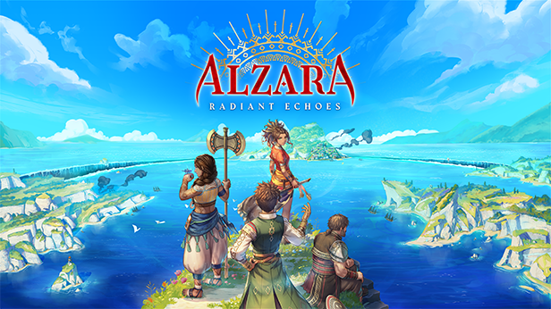

ALZARA: Radiant Echoes - Interview des développeurs
Une plongée dans les coulisses de ce JRPG inspiré des classiques avec une touche méditerranéenne

Studio Camelia
ALZARA: Radiant Echoes
Interview réalisée par jRPGcontentCreator, 20 Mai 2024
Introduction
J'ai eu l'opportunité d'interviewer l'équipe de développement de ALZARA: Radiant Echoes, un JRPG prometteur développé par Studio Camelia. Ce jeu, qui a récemment lancé sa campagne Kickstarter, propose une expérience inspirée des classiques du genre tout en apportant une touche d'originalité avec son univers méditerranéen et ses mécaniques de combat innovantes.
Origines du Projet
Question: Pouvez-vous nous parler de la genèse de "ALZARA: Radiant Echoes"? Quelle a été l'inspiration principale derrière le jeu?
L'aventure a démarré fin 2021 au moment de la création du Studio Camelia. Avec ALZARA, nous avons pour volonté d'apporter de la fraîcheur au genre du JRPG, et notamment en avec un groupe de héros auprès de qui on peut s'identifier, un univers méditerranéen dont on s'inspire des légendes et mythes, et une histoire mature où le concept de partage devient un champ de bataille moral aux conséquences profondes.
Pour le jeu, nous nous sommes inspirés de classiques de l'âge d'or du JRPG, tels que Golden Sun ou encore Final Fantasy X.
Question: Pourquoi avez-vous choisi de lancer une campagne Kickstarter pour ce projet? Quels avantages cela offre-t-il par rapport à des méthodes de financement plus traditionnelles?
Nous sommes de grands fans de JRPG et Kickstarter nous permettait d'assumer notre volonté d'être plus proches de notre communauté. Pour un jeu qui a pour thème le partage, on trouvait que ça fonctionnait bien 🙂
Kickstarter nous permet aussi de montrer l'intérêt des joueur·euses pour un jeu comme le nôtre, et donc de voir si notre concept plaît !
L'équipe de Développement
Question: Pouvez-vous nous présenter l'équipe de Studio Camelia? Quelle est la taille de l'équipe et quelles sont les expertises principales de ses membres?
Nous sommes une équipe de développeur·euse·s expérimenté·e·s de 14 personnes réparties un peu partout en France mais aussi au Canada. Tous les métiers nécessaires au développement de jeux vidéo y sont représentés.
Question: Vous collaborez avec des artistes japonais renommés comme Yoshiro Ambe et Motoi Sakuraba. Comment ces collaborations ont-elles vu le jour et quelle a été leur contribution au projet?
Nous avons pu entrer en contact avec Yoshiro Ambe et Motoi Sakuraba grâce à notre participation dans la communauté JRPG, ainsi qu'au réseau que nous avons développé durant notre carrière dans l'industrie.
L'univers méditerranéen d'ALZARA: Radiant Echoes - Studio Camelia
Gameplay et Mécaniques de Jeu
Question: Le système de combat d'ALZARA est très stratégique avec la possibilité de combiner des éléments magiques. Pouvez-vous expliquer comment cette mécanique fonctionne et comment elle influence le gameplay?
Question: La gestion des positions des personnages entre la ligne de front et la ligne arrière semble cruciale. Comment cela affecte-t-il la dynamique des combats et quelles stratégies les joueurs peuvent-ils adopter?
Notre jeu a pour thème le partage, et cela influence aussi le système de combat. Nos héros se battent ensemble, et peuvent combiner leur magie élémentaire afin de débloquer de nouveaux éléments. Ainsi par exemple, le feu et l'air combinés permettent d'obtenir de la foudre.
Ce mélange d'éléments est rendu possible grâce au Swap, qui permet à nos héros de changer de ligne en combat.
La gestion des lignes est cruciale : à l'avant les héros disposent de capacités offensives, et à l'arrière de support. L'avant dépense de l'Echo (l'équivalent du mana dans notre monde), et l'arrière permet d'en récupérer. En swappant, les héros se partagent une partie de leurs pouvoirs magiques, donnant accès à de nouveaux sorts au héros qui arrive en première ligne !
En plus du mix d'éléments, les joueureuses devront aussi composer avec l'archétype des héros, mais aussi des sorts… sans oublier les monstres en face ! On voulait que le système de combat soit simple au premier abord, tout en gagnant en complexité au fur et à mesure de l'histoire.
Narrative et Univers du Jeu
Question: L'histoire de "ALZARA: Radiant Echoes" tourne autour d'une résistance contre une invasion. Pouvez-vous nous en dire plus sur le contexte et les motivations des personnages principaux?
L'Echo a disparu dans la grande majorité du monde. Cet Echo permettait à la Nation Vedores de produire de grandes quantités de biens nourriciers. Après des décennies à se serrer la ceinture, la situation n'est plus tenable et Vedores a choisi d'envahir l'Archipel de Taqsim où se trouvent nos héros. Ici, différentes visions du partage des ressources s'affrontent, mais la famine rend les rapports difficiles et Vedores finit par appliquer un régime coercitif sur les habitants locaux, qui n'ont pas les moyens de se défendre.
Question: Le monde de Taqsim, inspiré des paysages méditerranéens, semble riche en détails. Quelles ont été vos sources d'inspiration pour la création de cet univers et comment cela se reflète-t-il dans le jeu?
La première inspiration fut la civilisation minoenne. Basée sur l'île de Crète, et plus ancienne que l'avènement du peuple grec, cette civilisation a été un carrefour de cultures et de commerces, reliant les pays du Nord, de l'Est et du Sud de la Méditerranée.
Pour avoir la plus grande diversité, nous sommes allés chercher des références tout autour du bassin méditerranéen et sur plusieurs époques. On trouve des inspirations hittites, mésopotamiennes, libyennes, égyptiennes, gréco-romaines ou même provençales. Ces influences se retrouvent dans les noms, les lieux, les légendes et la faune d'Alzara. Nous avons particulièrement fait attention à refléter la nourriture, les produits et l'agriculture que l'on trouve autour de la Méditerranée, donc attendez-vous à sentir le thym et l'huile d'olive au cours de votre aventure.
Design et Musique
Question: Comment Yoshiro Ambe a-t-il influencé le design des personnages et quel a été son processus créatif pour ce projet?
Nous avons réalisé une interview avec Yoshiro Ambe qui répond justement à cette question !
Question: Motoi Sakuraba est connu pour ses bandes-son mémorables. Quelle a été son approche pour composer la musique de "ALZARA: Radiant Echoes" et comment cette musique enrichit-elle l'expérience de jeu?
Nous avons une interview avec Motoi Sakuraba qui arrive bientôt, nous vous invitons à patienter quelques peu 🙂
Défis et Apprentissage
Question: Quels ont été les principaux défis rencontrés lors du développement de "ALZARA: Radiant Echoes" et comment les avez-vous surmontés?
Le principal défi a été la création de l'entreprise et l'obtention de nos premiers financements. Depuis 2021 et la génèse du projet, nous avons pu progressivement constituer notre équipe de développeur·euse·s expérimenté·e·s et ainsi convaincre des partenaires financiers, ce qui nous permet d'avancer avec beaucoup d'enthousiasme pour la suite !
Question: Quels enseignements avez-vous tirés de ce projet que vous aimeriez partager avec d'autres développeurs indépendants?
ALZARA Radiant Echoes n'est pas encore sorti donc nous allons certainement avoir d'autres enseignements à partager dans le futur, mais s'il n'y en avait qu'un à donner, ce serait de s'assurer de bien connaître les fans pour qui le jeu est développé. Connaître sa communauté et s'en nourrir est une excellente source d'inspiration pour nous.
Avenir du Projet
Question: La campagne Kickstarter a été un succès. Quels sont vos prochains objectifs pour le développement du jeu et quelles sont les prochaines étapes avant sa sortie prévue en 2026?
Nous sommes hyper heureux·ses de l'accueil qui a été réservé à ALZARA à son annonce. Nos prochains objectifs sont de continuer le développement du jeu bien entendu. Une démo est prévue pour plus tard, et pour le reste, nous vous invitons à rester informé·e·s en nous suivant sur les réseaux !
Question: Avez-vous des plans pour des extensions ou des contenus additionnels post-lancement?
C'est encore un peu tôt pour en parler !
Ces questions permettront aux lecteurs de mieux comprendre les tenants et aboutissants de "ALZARA: Radiant Echoes", de découvrir l'équipe derrière le jeu, et de saisir l'essence de ce projet ambitieux et passionné !
En attendant voici le Trailer 👍
Merci beaucoup !
Autres interviews
Lucid Dreams Studio
BIOMORPH
14 Avril 2024
Une plongée dans les coulisses de ce metroidvania innovant avec une mécanique unique de transformation.